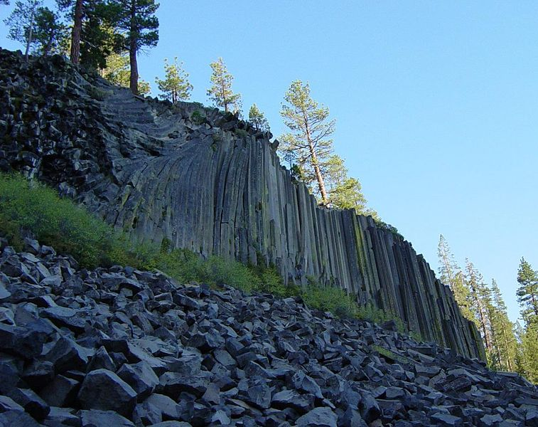

Pacific Crest Trail
The Pacific Crest Trail was first proposed by Clinton C. Clarke, as a trail running from Mexico to Canada along the crest of the mountains in California, Oregon, and Washington. The original proposal was to link the John Muir Trail, the Tahoe-Yosemite Trail (both in California), the Skyline Trail (in Oregon) and the Cascade Crest Trail (in Washington).
The Pacific Crest Trail System Conference was formed by Clarke to both plan the trail and to lobby the federal government to protect the trail. The conference was founded by Clarke, the Boy Scouts, the YMCA, and Ansel Adams (amongst others). From 1935 through 1938, YMCA groups explored the 2000 miles of potential trail and planned a route, which has been closely followed by the modern PCT route.
In 1968, President Lyndon B. Johnson defined the PCT and the Appalachian Trail with the National Trails System Act. The PCT was then constructed through cooperation between the federal government and volunteers organized by the Pacific Crest Trail Association. In 1993, the PCT was officially declared finished.[9]
The Trust for Public Land has purchased and conserved more than 3,000 acres along the Pacific Crest Trail in Washington.[11] Consolidation of this land has allowed for better recreational access as well as greater ease to manage conservation lands.
